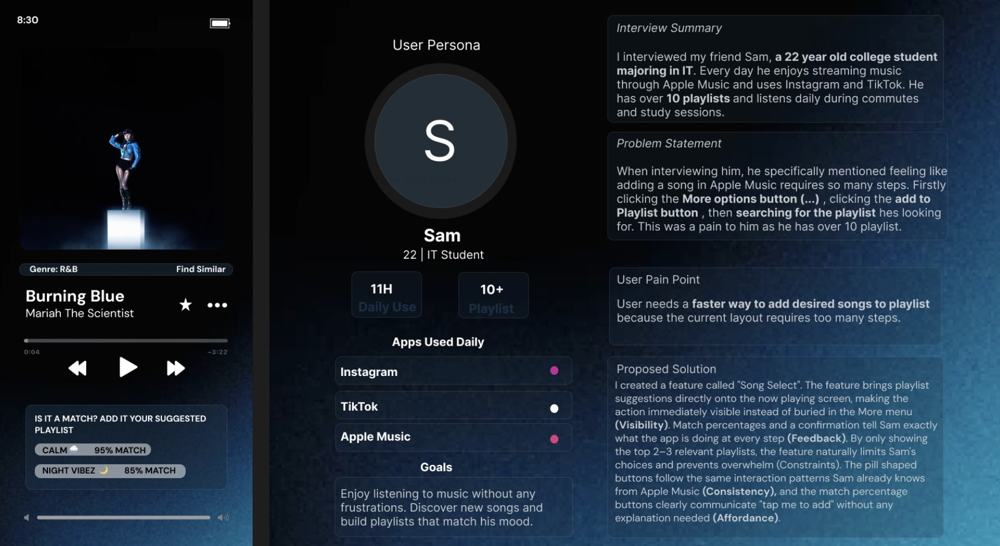
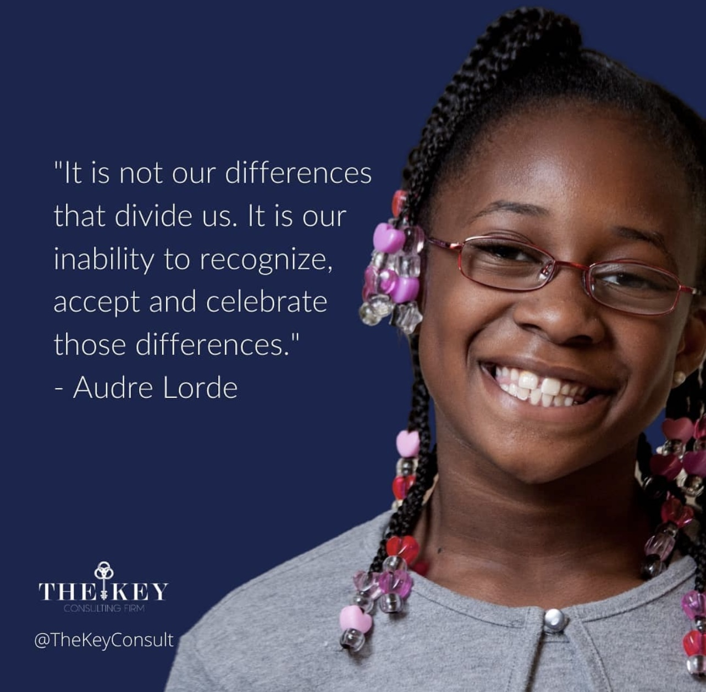
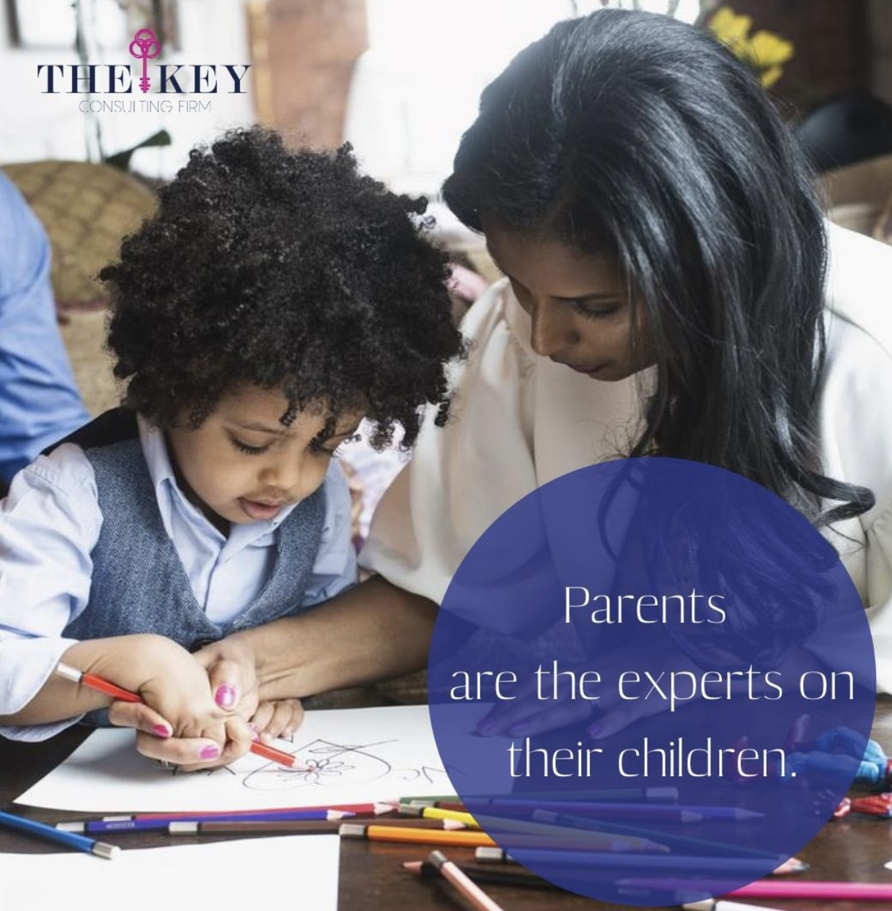
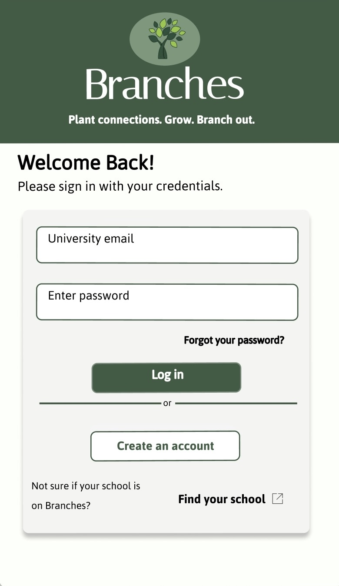
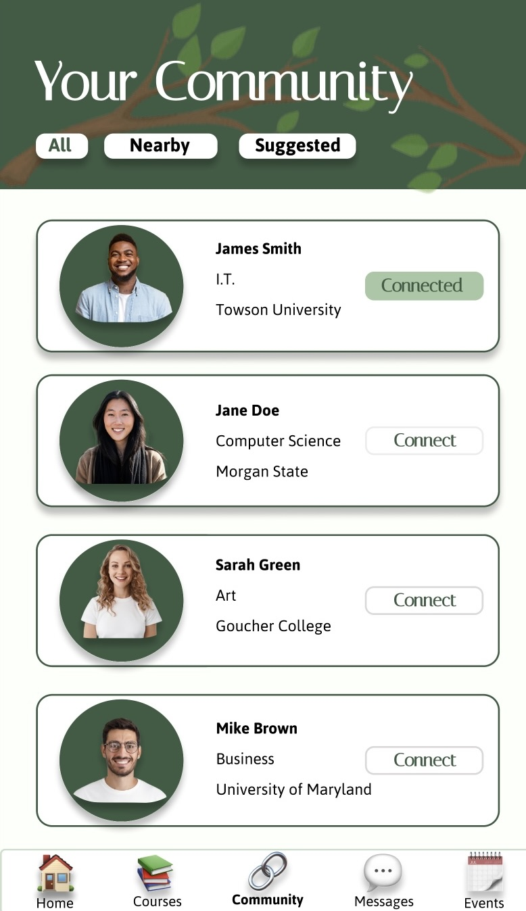

UI/UX Designer & Graphic Designer
Designing with intention, creating with heart. I design interfaces that feel intuitive and look beautiful, rooted in real user needs and built with a graphic designer's eye. From Figma prototypes to brand campaigns, I make ideas visible.
View My Work
CIS 435: Human Computer Interaction · Towson University · Spring 2026
This project began with a real conversation. I interviewed my friend Sam, a 22-year-old IT student and daily Apple Music user to understand friction points in his listening experience. His frustration was immediate and specific: adding a song to a playlist takes too many steps.
My solution "Song Select" surfaces playlist suggestions directly on the Now Playing screen. Using match percentages, it shows the 2 to 3 most relevant playlists right where the user already is, reducing cognitive load and keeping the experience fluid.
CIS 435: Human Computer Interaction · Towson University · Spring 2026
The Maryland.gov website serves millions of residents including elderly users, people with visual impairments, and users with cognitive disabilities. My redesign identified three distinct user personas and addressed each systematically through HCI principles.
Key additions: a persistent Read Aloud, Text Enlargement, and Translation bar; simplified navigation; a prominent search bar in the hero; and a Need Help? button with a direct phone number for older users unfamiliar with dropdown navigation.


Graphic Designer · Remote · January 2019 to January 2021
The Key Consulting Firm is an educational and mental health consulting organization specializing in culturally responsive support for Black children and families. During my two years as their graphic designer, I was responsible for all visual content that represented the organization externally.
Every graphic had to balance two goals: aesthetic quality that builds organizational credibility, and accessibility to the communities the firm serves.


CIS 435: Human Computer Interaction · Towson University · Spring 2026
Branches is a mobile social networking app designed to help college students connect with classmates, discover campus events, and build their academic community across universities. Students find peers in the same courses, message connections, share events in chat, and register for campus activities all in one place.
A core design priority was accessibility-first settings built directly into the product: adjustable text size, color themes, contrast modes, dark mode, screen magnification, and screen reader (VoiceOver) support. Designed for a cross-university audience spanning Towson University, Morgan State, Goucher College, and the University of Maryland.
I'm Grace Abbeh, a UI/UX designer and Information Technology graduate from Towson University (May 2026). I came to design through a deep love of graphics, the way a well-crafted visual can communicate more than words, build trust, and make someone feel something.
That instinct, combined with formal training in Human-Computer Interaction, has shaped how I approach design: always starting from the user, always asking why before deciding how.
My professional background in graphic design gave me real-world experience delivering for clients on deadline. My HCI coursework gave me the framework to understand why certain designs work and others don't. And my current role as a Student Advisor has sharpened my communication skills, because great design, like great advising, is ultimately about understanding what someone needs and making it easy for them to get there.
I'm currently completing the Google UX Design Certificate on Coursera and actively building my portfolio. I'm looking for opportunities to grow in UI/UX where I can bring both creative intuition and user-centered thinking to a team.
I'm actively looking for UI/UX design opportunities, internships, junior roles, and freelance projects. If you're building something and need a designer who cares deeply about craft and users, I'd love to talk.
Towson, MD
240-406-3839
B.S. Information Technology
Towson University · May 2026
Completing Google UX Design Certificate
Open to UI/UX opportunities